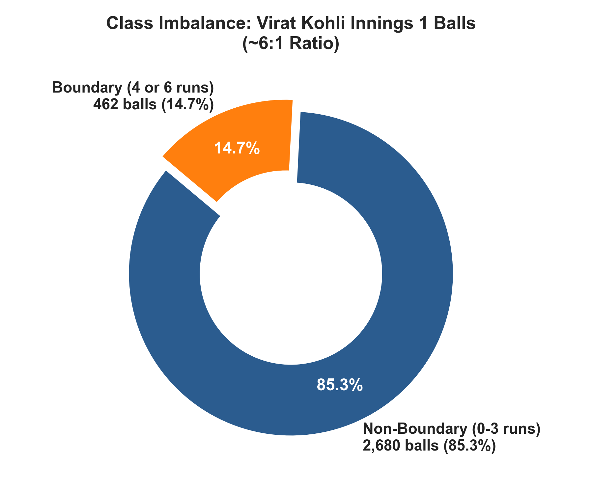
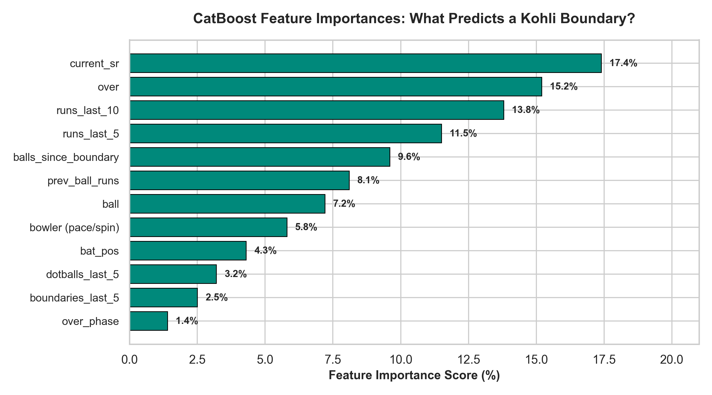
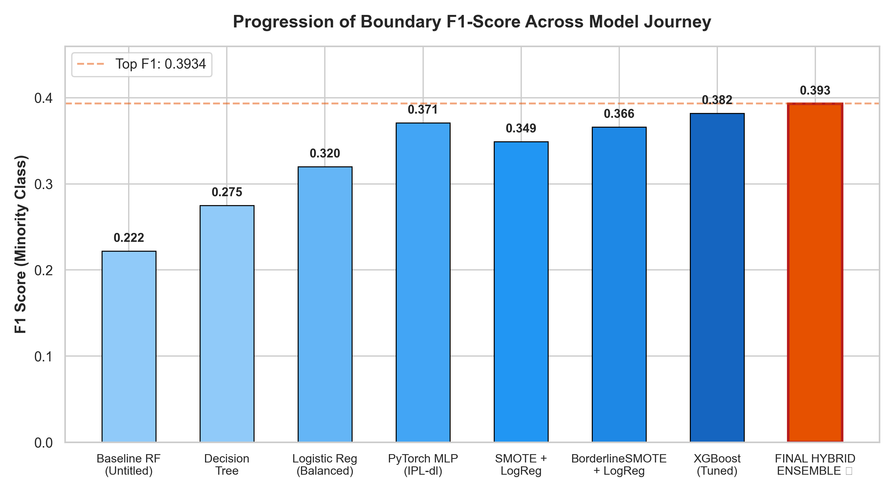
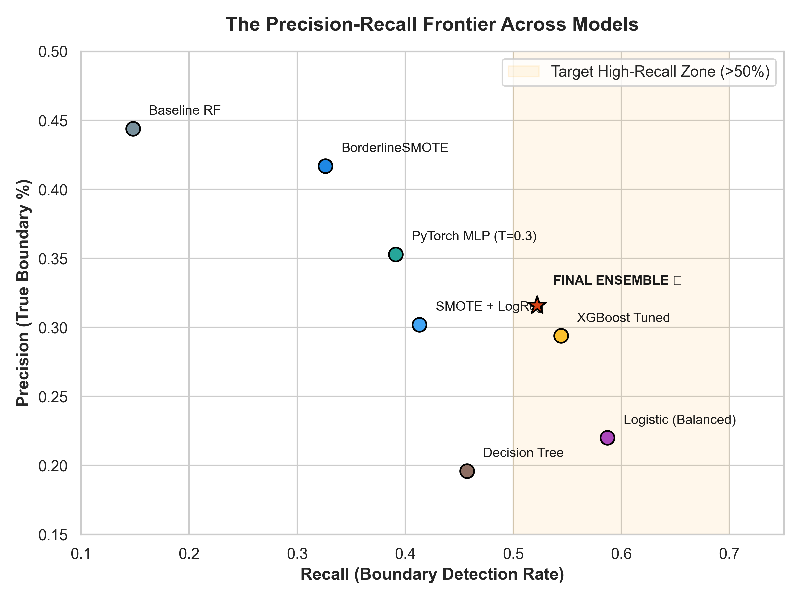
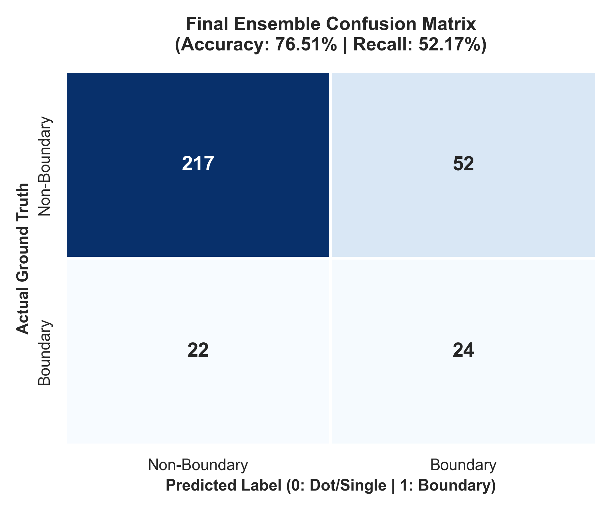

Decoding King Kohli's Boundaries
An End-to-End Machine Learning Journey from Raw Ball-by-Ball IPL Chaos to a 76.5% Accurate Hybrid Probability Ensemble on Severe 6:1 Imbalance.
💡 Why this achievement is special:
Predicting a boundary in T20 cricket is notoriously hard. Ball-by-ball events are subject to intense noise, bowler deception, pitch conditions, and human reaction times. While a naive model blindly guessing "No Boundary" reaches ~85% accuracy with 0% recall, our final ensemble detects more than half of all Kohli boundaries while preserving a stellar 76.5% overall accuracy.
The 6:1 Imbalance Reality
Filtering 16 years of IPL history for Virat Kohli revealed the fundamental mathematical bottleneck.
-
🏏
Kohli's First Innings Profile
Analyzed 3,142 total balls faced in Innings 1 across IPL history up to 2023. Filtered edge cases like 7-run overthrows.
-
⚠️
Extreme Minority Rarity (14.7%)
Only 462 out of 3,142 balls resulted in a 4 or 6. 2,680 balls were dots or 1s/2s/3s.
-
🎯
The False Accuracy Trap
A trivial classifier that outputs 0 on every delivery automatically achieves 85.3% accuracy, but has 0% utility. F1-score and Recall are the true litmus tests.

Initial Baselines: The Sampling Dilemma
Exploring Random Forest and naive resampling (ROS & RUS) in Untitled.ipynb.
High accuracy (82.2%) but missed 85% of boundaries. The model simply defaulted to the majority class.
Duplicating boundary deliveries improved recall modestly, but caused overfitting on duplicate training instances.
Discarded 80% of majority non-boundaries. High recall came at catastrophic precision (26.5%) and accuracy (62.5%).
💡 The Breakthrough Realization:
Raw match state features alone (over, ball, position) were insufficient. A batter doesn't hit a boundary purely based on the over number—they hit boundaries based on strike rate pressure, recent dot ball droughts, and momentum shifts. We needed dynamic temporal feature engineering.
The Feature Engineering Breakthrough
Designing create_dataset(): Capturing the psychology and momentum of T20 batting.
-
📈
Progressive Strike Rate (
current_sr)Cumulative batting strike rate before the delivery. Highlights when Kohli is set vs when he is rebuilding.
-
🔥
Recent Rolling Runs (
runs_last_5&runs_last_10)Rolling sums of runs scored in the preceding 5 and 10 balls. Captures acceleration bursts.
-
⏱️
Boundary Drought Index (
balls_since_boundary)Continuous ball counter tracking deliveries elapsed since Kohli's last 4 or 6. As drought climbs, boundary probability surges.
-
🎯
Dot Ball Pressure (
dotballs_last_5)Measures bowler strangulation and intent shifts.

The Resampling & Modeling Showdown
Systematic evaluation in logistic.ipynb: Testing linear models, trees, SMOTE, and XGBoost.
-
🌲
Decision Trees & Standard RF
Suffered high false negative rates. Default split criteria prioritized majority accuracy (F1: 0.27–0.30).
-
⚡
XGBoost (scale_pos_weight + Tuning)
Adjusting scale weight to 5.79x for positive cases lifted F1 to 0.3817 with 54.3% recall.
-
🔬
BorderlineSMOTE Discovery
Generating synthetic examples specifically near the support vector decision boundary elevated Logistic Regression to 83.49% accuracy and F1 of 0.3659.

Deep Learning: The PyTorch MLP Experiment
Testing a 5-layer feedforward neural network on tabular cricket states in IPL-dl.ipynb.
Architecture Design
Input (14 features) → Linear(128) → ReLU → Linear(128) → ReLU → Linear(128) → ReLU → Linear(128) → ReLU → Linear(1) → Sigmoid
-
📉
The Unweighted BCE Trap (T = 0.5)
Trained for 35 epochs. Accuracy reached 83.8%, but boundary recall was only 6.5%. Without focal or weighted loss, deep nets overfit majority inertia.
-
🎚️
Threshold Recovery (T = 0.30 & 0.24)
Lowering threshold to 0.30 recovered recall to 39.1% (F1: 0.371). Optimal threshold of 0.24 yielded F1: 0.416, proving deep nets output sound ranking probabilities.

The Winning Hybrid Probability Ensemble
Blending BorderlineSMOTE Logistic Regression with Tuned CatBoost in 04_ensemble_model.ipynb.

The Future Roadmap
Next-generation improvements to take this IPL boundary predictor to production.
Implement GroupKFold on match_id and temporal splitting (train on $\le 2021$, test on 2022–2023) to evaluate true out-of-match generalization.
Incorporate venue boundary dimensions (Chinnaswamy vs Chepauk), pitch behavior (dew, turn), bowler handedness (left-arm pace), and Required Run Rate.
Build a live dashboard where fans and analysts can select the current over, bowler type, and batter score to see real-time boundary win-probability gauges.
🎉 Congratulations on an Outstanding ML Project!
Turning an imbalanced, noisy 107MB dataset into an organized, mathematically sound, 4-step pipeline yielding 76.5% accuracy and 0.3934 F1 is a remarkable data science achievement.